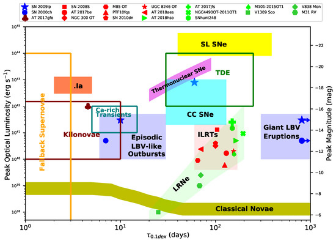
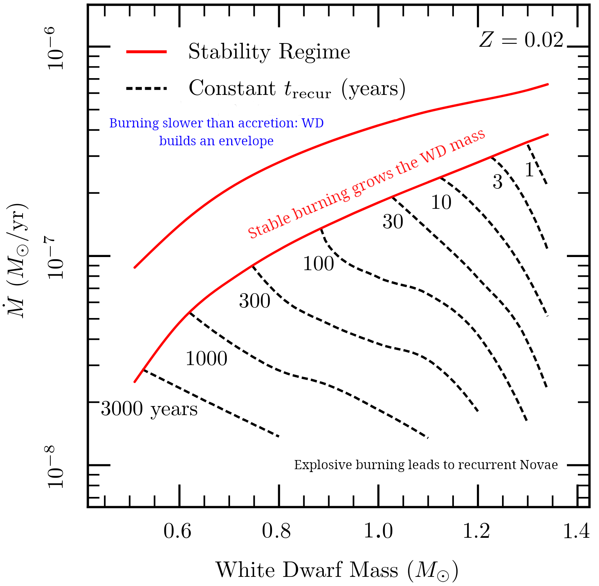
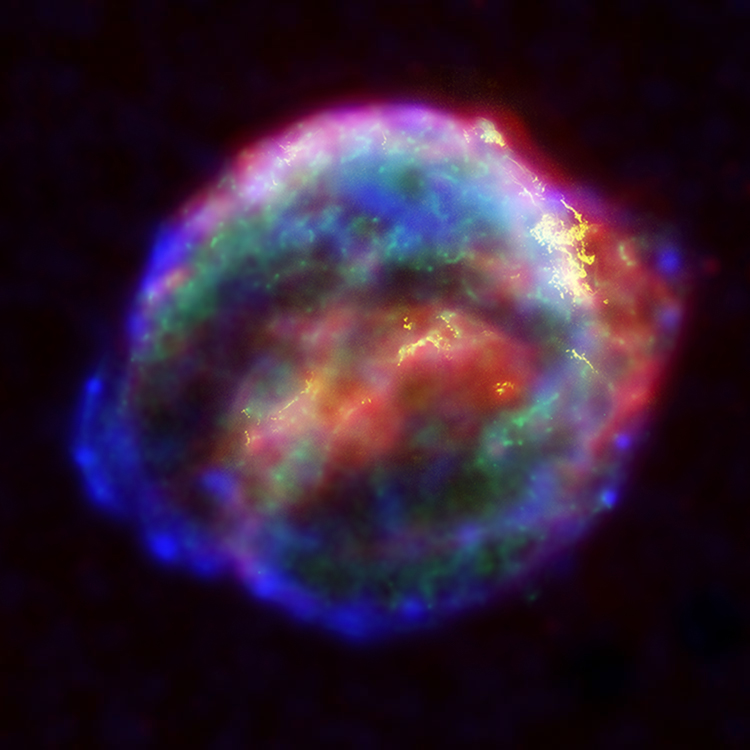

Materials: Hansen & Kawaler book Sec. 2.6.3, Filippenko 1997, Shen & Bildsten 2007, Hillebrand & Roepke 2011, Maoz & Mannuci 2012, Wolf et al. 2013, Dimitriadis 2026, Desai et al. 2026
Time domain astrophysics is much more than just CCSNe
We have discussed in the core-collapse lecture the collapse of an iron (or in some cases ONeMg) core and how it can trigger the SN explosion of a massive star. The transient zoology is bigger than just SNe. With the expansion of observational capabilities in cadence, depth, wavelength ranges and availability of progenitor catalogs and star formation maps for host galaxies, we now can detect a wide variety of transients:

Understanding the physics driving each of these transients, their astrophysical host galaxies and parent populations, their absolute and relative rates is a very active topic of research.
Explosion of WDs
In this lecture, we will instead discuss explosions of low-mass stars ending their life as WDs, indicated as "thermonuclear SNe" in the figure above.
In isolation, a WD can only cool down, possibly releasing some latent heat to slow down the cooling if/when it crystallize, and continue cooling further afterwards, until it becomes too faint and cold to be detected. Theoretically, this should eventually produce a "black dwarf" (in a time longer than the age of the Universe).
While in a hypothetical "black dwarf" the density may be so high that density-driven nuclear reactions (pico-nuclear reactions) could occur and start a dynamical phase of evolution (e.g., Caplan 2020), the fact that the Universe is too young to have formed black dwarfs guarantees that this is not part of the transients we do observe.
Conversely, a WD that is not in isolation, but instead is part of a binary system, may be perturbed by the companion (e.g. during a mass-transfer phase), which can also lead to dynamical and explosive consequences. Here, we focus on these explosions, and more specifically the ones that will result in a full destruction of the WD – so called SNIa.
Accreting WDs: a zoo within a zoo
Recall that a WD is "cold" from the point of view of the structure (because the electron degeneracy pressure dominates and is independent of \(T\ll\varepsilon_{\rm Fermi}/k_{B}\)), but on the HR diagram they populate the region on the left of the ZAMS: their effective temperatures are higher than main-sequence stars, which is important for the radiative transfer in their envelopes and ultimately observational properties.
If a WD can accrete mass from a companion star (of any type), several outcomes are possible depending on the accretion rate, composition of the accreted matter, cooling time of the added material, etc.

The figure above shows the accretion rate as a function of WD mass on the x-axis, and three separate regimes are marked (assuming a solar metallicity composition of the accreted material, dominated by Hydrogen).
Low accretion rates: Novae
For low accretion rates, the material landing at the WD surface encounters the hot surface and burns. But the burning is unstable: small \(T\) perturbations increase the \(\varepsilon_{\rm nuc}\) of this surface burning more than the (radiative) cooling rate. Therefore, small \(T\) perturbations result in a pile-up of thermal energy in the burning region, accelerating the burning into a "thermonuclear runaway" (TRN) resulting in a nova explosion.
The explosion itself ejects (small amounts) of matter, producing a transient, until accretion (from a binary companion) resumes restarting the cycle. The bottom red-line in Fig. 1 corresponds to the accretion rate below which novae are expected, and the dashed black line show modelled "recurrence times", i.e., time intervals between nova eruptions. Overall, novae are expected to not grow the WD mass (although debates remain active on this).
N.B.: For high WD masses and accretion rates, these times become small compared to human lifetimes: novae can (rarely) repeat often enough that we can see multiple explosions.
Depending on the composition of the material accreted, and the orbital architecture of the binary hosting a WD accretor (or in other words, the nature of the companion and the accretion rate evolution), there are several sub-classes of novae (e.g., cataclysmic variables with a main-sequence companion from which the common envelope idea stems, symbiotic variables with a red-giant companion, He novae, etc.).
N.B.: We also see a rarer-class of He-novae where the composition of the accreted material is He-rich, which changes the \(\varepsilon_{\nuc}\) and thus the lines in Fig. 1.
Recently, novae studies have become a hot topic because of the detection of $γ$-rays in these events. For a recent review on novae, see Chomiuk, Metzger, and Shen 2021.
Highest accretion rates: Rebuilding a red-giant
For accretion rates above the upper red line in Fig. 1, the matter comes in too fast to burn, and will pile up at the surface of the WD, re-creating an H-rich envelope. If this extends enough it will be cold and non-degenerate. At the bottom of this envelope, slow, steady shell burning will occur, leading to the "reconstruction" of a star with a degenerate core (the WD) and a non-degenerate envelope!
Intermediate accretion rates: growing the WD
For accretion rate in between the red lines in Fig. 1, the nuclear burning of the accreted material will be stable. At the bottom red line, the heating and cooling rate are the same, meaning the energy release by the burning doesn't impact the structure, and the ashes are added to the WD.
However, as a WD grows in mass, the electrons become more energetic (\(\varpsilon_{\r Fermi}\) increases), until they become ultra-relativistic. Once \(P\sim\rho^{4/3}\) in the majority of the domain, there is a maximum possible WD mass (the Chandrasekhar mass), above which hydrostatic equilibrium cannot be satisfied.
Therefore, accreting WD approaching this limit will experience a dynamical phase of evolution, resulting in an explosive signal. When and how exactly this happens is still a matter of heated debates.
- SNIa
These correspond to \(\gtrsim 90\%\) of SNIa subtypes (Desai et al. 2026) and \(\sim30\%\) of all SNe (including CCSNe) observed. Therefore the overall rate of SNIa and CCSN have similar orders of magnitude, of order of 0.1-1/century per Milky-way-like galaxy.
From their location in their host galaxies, we know that these transients are not associated to young stellar populations: they occur often in elliptical galaxies with no ongoing star formation, or in between spiral arms (once again, far from star formation), implying long-lived progenitors such as WDs and unlike short-lived massive stars.

Figure 3: Composite image of the SN remnant of SN1604, a type Ia SN observed by J. Kepler (among others). Credits: NASA/ESA/JHU/R.Sankrit & W.Blair. These explosions are completely destructive: the WD is obliterated with all its gas being sent to infinity by the explosion. They leave behind no compact object (in this they are analogous of pair-instability SN at much higher stellar masses).
The "normal" SNIa show significant homogeneity in photometric properties. This enables to use them as "standardized candles" for distance measurements in cosmological context (see below).
- SNIax
These can be thought of as "failed" SNIa where the WD is not completely destroyed. This leads to overall fainter explosions, and are much rare than normal SNIa.
The surviving WD remnant's surface properties may depend on the explosion which could in principle create unique degenerate stars impossible in isolation.
- SNIa-CSM
While the type Ia class is defined to not show H lines (and the "a" implies Si lines), some SNIa do show narrow H line which are interpreted as the blast wave from the SNIa running into nearby slow-moving (narrowness of the lines) circumstellar material (CSM).
This is a relatively rare class of SNIa, where the presence of nearby CSM suggests that the WD and its companion (whatever it may be) were brought close together by non-conservative binary evolution processes shortly before the explosion.
N.B.: Other sub-classes based on energetics, WD compositions, connection to theoretical models, and spectral properties exist, the list here covers only the main subtypes.
Classes of theoretical models for WD explosions
Theoretical models of WD explosions are a very rich, vast, and and highly-debated landscape. They can be subdivided along various axes (progenitor, propagation of the burning front, ignition mechanism) that are not orthogonal. In the following, I try to sub-divide them to highlight the crucial components
SNIa models based on progenitors
As discussed above, a SNIa requires a WD accreting at a typical rate where burning of the newly accreted material at the surface is dynamically stable and grows the WD mass.
Depending on where the material comes from, there are two main sub-classes of theoretical models:
Single-degenerate models
The donor companion to the WD is a non-degenerate star. This implies a wider progenitor binary system (so that the non-degenerate star can fit within the orbit), but to avoid the Nova regime it is helpful for the non-degenerate companion to be a He-rich stripped star (e.g., post Red giant+WD common envelope ejection).
This channel should occur occasionally in nature, and may be particularly relevant to explain the SNIa-CSM (because it's easier to keep the CSM around if the companion didn't have time to evolve to become degenerate).
Double-degenerate models
In this case, the donor companion to the exploding WD is another WD!
N.B.: bringing together 2 WDs close enough that go through mass transfer requires at least a common envelope + GW emission to further shrink the orbit.
Because of the \(M\propto R^{-3}\) relation for WDs dominated by non-ultra-relativistic electrons, the donor star is the lowest mass WD (corresponding to the largest radius). The accreting WD is thought to be the one that will explode in the SNIa, which will eject all the mass of this WD, completely removing the mass around which the donor orbits.
Therefore, in this scenario, the lower mass WD donor, is shot out from the binary with its pre-explosion orbital velocity (think of the "Blaauw kick" and SN-kick discussions). Because of the lower donor mass and necessarily tight pre-SN period to allow for mass transfer, this should produce extremely fast-moving stars possibly out of thermal equilibrium because of the pre-SN mass transfer and the perturbation caused by the companion explosion. Detection of such hypervelocity weird-looking stars in Gaia samples have been claimed (see e.g., Shen et al. 2018).
Phillips relation
SNIa and dark energy
Using the Phillips relation, SNIa can be empirically calibrated (stepping aside the theoretical debates on the explosion mechanism and parent systems) to create a step in the distance ladder that uses transients rather than stars.
This allowed to extend the distance ladder significantly, since explosions outshine stars (although still remaining in the relatively "local" Universe w.r.t. the cosmic microwave background), and lead to the discovery of the acceleration of the Universe and thus the concept of dark energy. This discovery was awarded the 2011 physics Nobel prize (including a former Steward Observatory undergraduate student!).
Host galaxies
Another way to empirically infer the physical origin of an observed transient, is to look at the surrounding stellar population. The initial distinction between type Ia and CCSNe was based on the former occurring typically in elliptical galaxies with old stellar populations or in between star forming regions in spiral galaxies (so far from the star forming region itself): this suggests these events have long delays and are not associated to young and short-lived stars, and instead related to longer-lived objects, perhaps low-mass stars.
Studying the age distribution of the surrounding population can also corroborate this, provided the surrounding population is related to the transient (which may not be true if the progenitor moves a lot during its lifetime, e.g., runaway stars).
Homework
- Make a hydrostatic sphere of radioactive \(^{56}\mathrm{Ni}\) in MESA,
you need
v_flagset to true (allow for hydrodynamics), and this is a very crude model of a SNIa explosion! This is an advancedMESAuse, not possible withMESA-web.